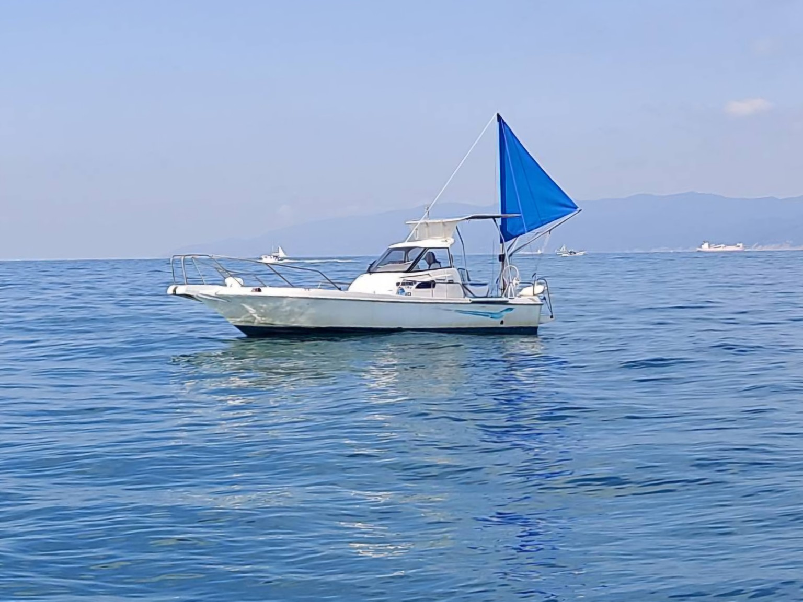
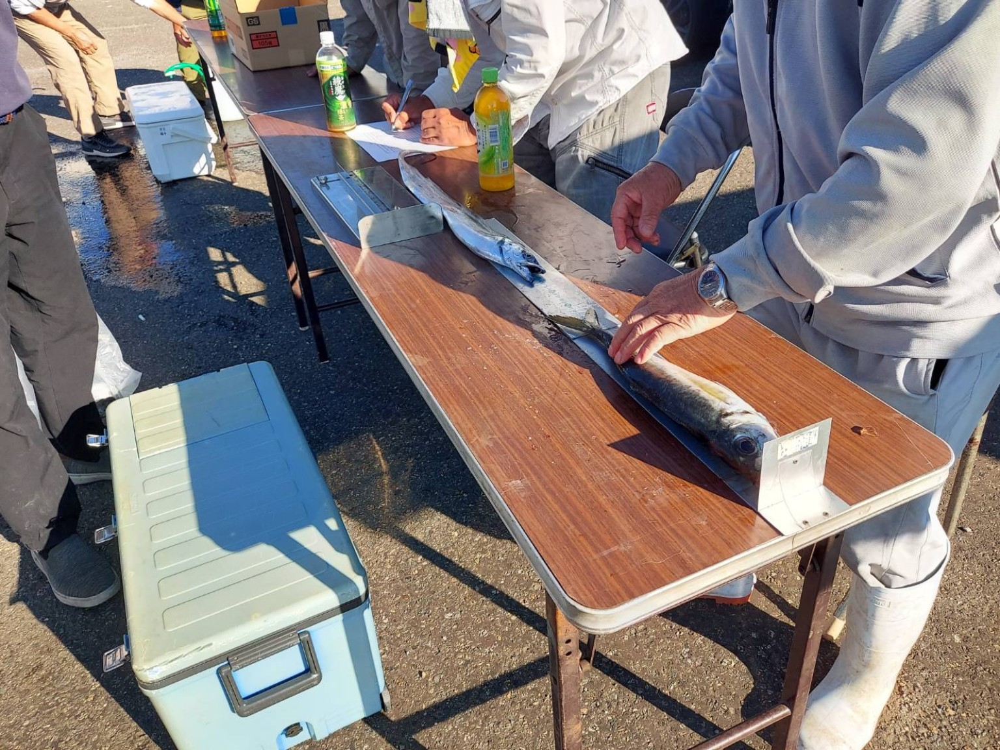
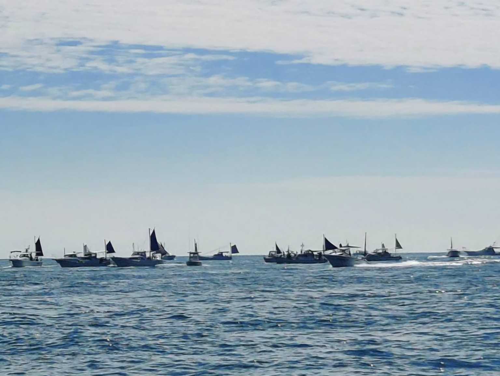

EST. 1981 / WAKAYAMA JAPAN
和歌山雑賀クラブ｜和歌山の船釣りクラブ
海に集い、仲間と釣る。仲良く、安全に。和歌山の海とともに歩む、大人の船釣りクラブ。
WAKAYAMA SAIKA CLUB✦ESTABLISHED 1981✦SAFETY & FRIENDSHIP
01 / OUR HERITAGE

周辺海域の風景（撮影場所・日時は資料未確認）
ROOTED IN THE SEA.雑賀の海から、40年以上。
和歌山雑賀クラブは1981年（昭和56年）の設立です。名称は、発足時に雑賀地区へ船舶を係留していたことに由来します。
2000年頃には最大148名の会員がいました。現在の会員数は37名で、会員の大半は和歌山在住。大阪・奈良在住の会員もいます。
1981設立（昭和56年）
37名現在の会員数
約60歳会員の平均年齢
148名2000年頃の最大会員数
会員数・平均年齢は2026年11月提供の情報です。
02 / THE SAIKA WAY
MORE THAN FISHING.釣りを超えた、仲間とのつながり。
目的は「仲良く、安全に釣りを楽しむ」こと。年間行事を通じて、情報交換と親睦を深めています。
SAFETY FIRST
出航中は助け合い
出航中に船舶の故障などがあった際は、会員同士で助け合って救助します。
SHARE THE KNOWLEDGE
釣り情報の共有
グループLINE等で、会員どうしが釣り情報を共有しています。
BETTER HARBOR
港・係留施設への意見具申
港湾設備や係留施設の不具合等について、関係機関へ意見を伝え、必要に応じて折衝します。
MEMBER BENEFITS
船舶保険の団体割引
船舶保険の団体割引があります。

03 / FISHING STYLE
THE CATCH.対象魚・釣法
鯛、鯵、青物などを、高仕掛けを中心に釣ります。
- 鯛
- 鯵
- 青物
- タチウオ
- カワハギ
- アオリイカ
- メバル
- アマダイ
橙色は高仕掛けを中心に釣る魚、黒色はその他の対象魚です。
04 / CLUB CALENDAR
SEASONS AT SEA.四季を楽しむ、クラブの年間行事。
- 4月通常総会・懇親会
- 7月夏季釣り大会
- 10月秋季釣り大会
- 11月忘年会11月末
必要に応じて役員会・臨時総会を開きます。具体的な開催日は、決まり次第お知らせします。
05 / PHOTO GALLERY
LIFE ON THE WATER.海と仲間の記録






06 / MEMBERSHIP
JOIN THE CREW.和歌山の釣りクラブ｜新規会員募集中。
和歌山周辺の海で船釣りを楽しむ和歌山雑賀クラブでは、新規会員を募集しています。入会条件は船舶を所有していること。入会金・年会費などの詳細は募集要項をご覧ください。
入会条件船舶所有
入会金10,000円
年会費8,000円
CONTACTお問い合わせ
入会やクラブの活動についてのご質問は、専用お問い合わせページをご覧ください。
CONTACT お問い合わせページ※ フォーム送信は受付サービスの設定後に開始します。会長：東 秀樹